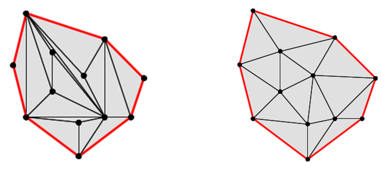
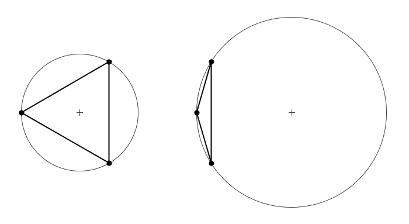
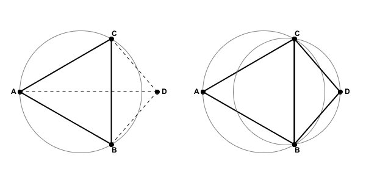
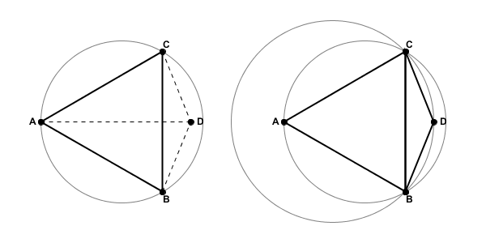
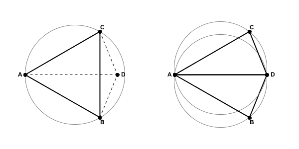
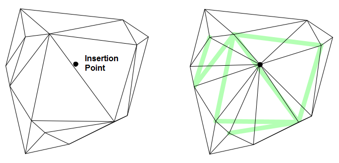

An Introduction to the Delaunay Triangulation
The primary structure created by the Tinfour software project is the "Delaunay Triangulation". Because it is advantageous to have a high-level understanding of the Delaunay Triangulation when using the Tinfour software, this article will provide a brief discussion of the subject. The Delaunay Triangulation is an important topic in graph theory and widely documented in published literature and on the Web. Readers desiring more detail will find that additional information is readily available.
Given a set of arbitrarily distributed data points, there are many ways to organize them in a triangular mesh. But not all possible triangle meshes provide a favorable representation of the spatial relationships between points. How do we decide which vertices to connect in such a way as to obtain an optimal structure? A Delaunay mesh-building process makes that decision based on a principle known as "the Delaunay criterion". The Delaunay criterion specifies a rule for using geometric considerations to determine whether a pair of neighboring triangles represents an optimal choice of connections. When a pair fails to meet the criterion, the connections are reorganized so that they are "Delaunay conformant". The process continues until all triangles in the mesh meet the Delaunay criterion. In the end, the process creates a mesh that has a number of attractive and useful features and is optimal in many regards.
To illustrate this idea, the figure below shows an example of what happens when a set of points is connected in an arbitrary manner versus one that conforms to the Delaunay criterion.
To many people, the arrangement on the right appears more pleasing than the one on the left. The image on the right is an example of a Delaunay Triangulation. In addition to its aesthetic appeal, the Delaunay has a number of favorable properties that were demonstrated by Boris Delaunay in 1934 and other researchers since.
One important characteristic of the Delaunay is that it tends to make "good" choices about which vertices are connected to each other. In both the examples above, vertices were produced using a random process and added to the triangulations one at a time. In the triangulation on the left, the vertices were linked together based solely on the order in which they were received. The assembly process made no effort to optimize the arrangement. That's why some of the vertices that are located close together ended up being separated by an intervening edge. In contrast, the triangulation on the right established links based on the Delaunay criterion. As you can see, it did a much better job of connecting vertices to their neighbors so that proximity relationships were preserved.
Another consequence of the Delaunay is that the triangles it produces are, on the whole, more nearly equilateral than those in non-optimal triangulations. For interpolation and data modeling purposes, these "robust" triangles have an advantage over "skinny" triangles in that they tend to provide a more uniform representation of the surface. In particular, the robust triangles result in more gradual changes in slope across the edges than the skinny triangles. And because there is a smoother transition across edges, interpolated surfaces from Delaunay conforming triangulations tend to have better continuity properties than those from non-optimal triangulations.
It is perfectly fine to use software tools based on the Delaunay Triangulation without being overly concerned about the nature of the underlying Delaunay criterion. But, for those who are interested, let's take a look at the principles at the foundation of the technique.
From a proof in geometry, we know that three non-collinear points, such as those that compose a triangle, define a unique circle. Thus each triangle in a TIN is associated with a figure called the circumcircle. Two examples of triangles with corresponding circumcircles are shown in the figure below.
From the figure, a few characteristics of the circumcircle are immediately apparent:
With those characteristics in mind, we will see that circumcircles play a key role in the definition of the Delaunay criterion. Specifically, a triangulation is "Delaunay optimal" if and only if the following conditions are met:
The second item is the key to the Delaunay Triangulation. Consider the figure below which shows triangle with vertices A, B, and C, with vertex D lying outside the circumcircle of Triangle ABC. If we link together vertices to add triangle CBD, the resulting network will be optimal from the perspective of the Delaunay criterion.
If, however, we were to position vertex D so that it was inside the circumcircle of Triangle ABC, the resulting triangulated network would not be Delaunay optimal. As the figure below illustrates, not only would vertex D be inside the circumcircle for ABC, but vertex A would be inside the circumcircle for triangle CBD.
So how can we correct the network to restore Delaunay Optimality? In the figure above, the edge CB seems to be the source of the problem. What if we were to break the link between vertices C and B and instead create an edge from A to D? As the figure below shows, Delaunay optimality is restored. Vertex C does not fall with the circumcircle of triangle ABD nor does vertex B fall with the circumcircle of triangle CAD.
The operation that switches the common edge between two adjacent triangles is sometimes called a "flip". The earliest Delaunay Triangulation algorithms were all based on using flip operations (see Lawson 1977). Since then, more sophisticated approaches have been developed (see Su 1996).
When a vertex is inserted into a TIN, there is nothing preventing it from falling into more than one circumcircle. In such cases, more than one edge may require flipping. An example of a case where a single insertion requires multiple edge modifications is provided below. The image on the left shows the original TIN before the insertion point was added to the structure. The image on the right shows the resulting network with both additional and modified edges. The light green line segments in the image show where edges from the original structure were flipped to create the new structure.
The Delaunay Triangulation provides the foundation for the Tinfour software library and many other software packages that perform surface analysis applications. In this paper we briefly considered some of the underlying ideas of the Delaunay Triangulation and gave a high-level view of how it is specified. A complete discussion of the uses and extensions of the Delaunay Triangulation is beyond the scope of this wiki. If you are interested in learning more, I encourage you to search the web for more information about this truly remarkable structure.
Delaunay, Boris (1934). "Sur la sphère vide", _Otdelenie Matematicheskikh i Estestvennykh Nauk 7_, p. 793–800
Lawson, C.L. (1977). “Software for C1 surface interpolation”, _Mathematical Software III_, Rice, J.R. ed., pages 161-194, Academic Press, NY.
Su, P., Drysdale, R. (1996). “A comparison of sequential Delaunay triangulation algorithms”, _Computational Geometry 7 (1997)_, p. 361-385